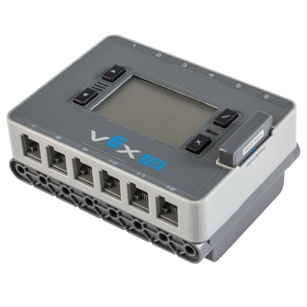
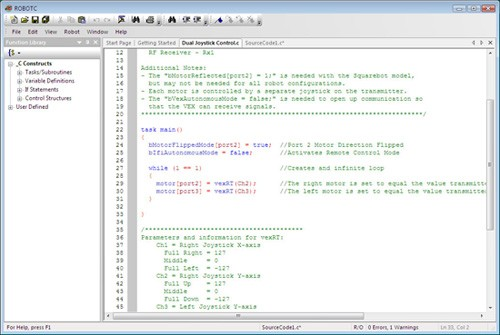

Обзор робототехнического конструктор VEX
Основатели компании VEX Robotics инженеры Тони Норман и Боб Мимлич познакомились в 1998 году на курсах робототехники, где они находились в качестве преподавателей для учеников средних школ. В течение нескольких десятилетий они развивали идею создания универсального робототехнического набора для развития у детей инженерного творчества.
Конструктор Vex состоит из:
- блока управления;
- 850 монолитных деталей, часть из которых сделаны из металла;
- датчика цвета;
- гироскопа;
- датчика ультразвука;
- двух сервомоторов;
- пульта дистанционного управления.
Блок управления имеет название VEX IQ Robot Brain и построен на базе процессора Cortex ARM, оборудованный LCD дисплеем и 12 портами для подключения моторов и датчиков.

Блок управления VEX IQ Robot Brain.
Производители робототехнического конструктора VEX не выпускают программного обеспечения для программирования блока управления. Программирование VEX IQ Robot Brain происходит сторонними от разработчика средствами. Основной средой программирования является ROBOTC for VEX Robotics.
ROBOTC for VEX Robotics позволяет создавать программы в двух режимах:
- в интерфейсе drag-and-drop, подходящим для начинающих пользователей;
- при помощи текстового языка программирования, сходным с языком C;
Кроме возможности создания программ ROBOTC for VEX Robotics содержит функцию построения графиков показания датчиков в режиме реального времени, что позволяет более точно калибровать свои модели.

Интерфейс среды разработки ROBOTC for VEX Robotics.
Преимуществом данного конструктора является возможность подключения большого количества датчиков и сервомоторов к одному блоку управления, что дает возможность создавать продвинутые модели.
Недостатками данного конструктора являются отсутствие собственно среды программирования для блока управления и небольшое количество разнообразных датчиков.
Для робототехнического конструктора VEX отсутствует учебно-методическая литература. Единственным учебным пособием, с которого можно начать обучение, является справка пользования средой разработки ROBOTC for VEX Robotics.